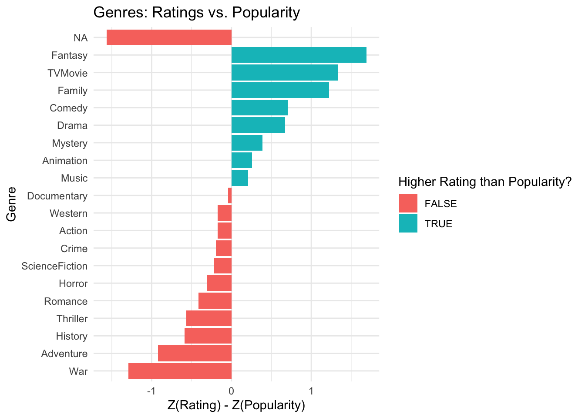
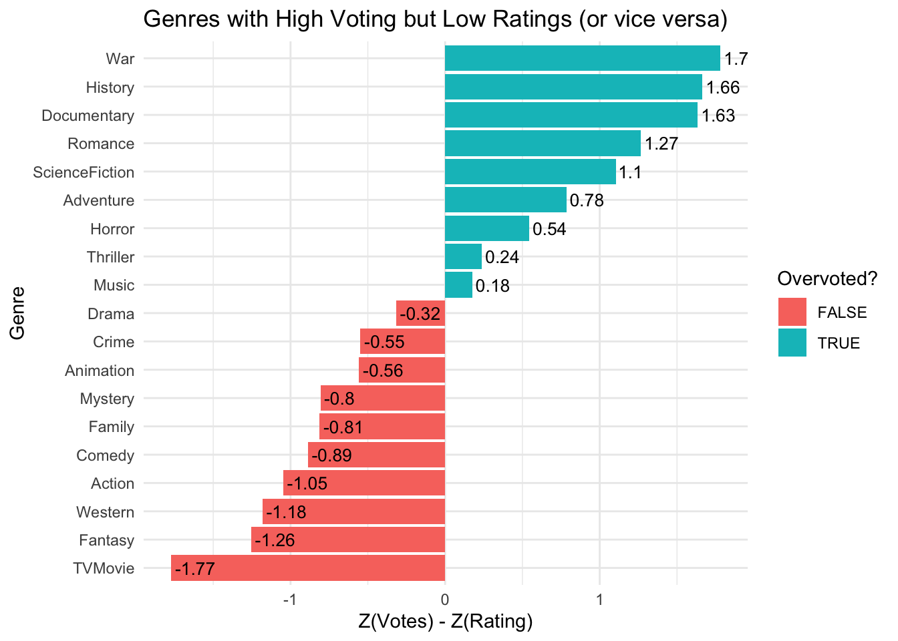

Exploring
Allison Li
04242025
For this portfolio, I plans to explore a dataset with movies with lgbtq theme/ elements! I think this is a really interest dataset maybe can also be used for one of the portfolio.
This is the dataset I will be using for this portfolio because I think it is an interesting project to explore, and might also give me a good movie list! The link to the dataset: https://github.com/r-lgbtq/tidyrainbow/tree/main
##install.packages("tidytuesdayR")
library(tidytuesdayR)
library(dplyr)
library(tidyr)
library(stringr)
library(ggplot2)
library(lubridate)
library(tidyverse)
lgbtq_movies <- readr::read_csv('https://raw.githubusercontent.com/rfordatascience/tidytuesday/main/data/2024/2024-06-25/lgbtq_movies.csv')## Rows: 7165 Columns: 12
## ── Column specification ───────────
## Delimiter: ","
## chr (5): title, original_title, original_language, overview, genre_ids
## dbl (4): id, popularity, vote_average, vote_count
## lgl (2): adult, video
## date (1): release_date
##
## ℹ Use `spec()` to retrieve the full column specification for this data.
## ℹ Specify the column types or set `show_col_types = FALSE` to quiet this message.##Step 1
summary(lgbtq_movies)## id title original_title original_language
## Min. : 14 Length:7165 Length:7165 Length:7165
## 1st Qu.:261362 Class :character Class :character Class :character
## Median :498605 Mode :character Mode :character Mode :character
## Mean :476025
## 3rd Qu.:663407
## Max. :983153
##
## overview release_date popularity vote_average
## Length:7165 Min. :1882-06-01 Min. : 0.000 Min. : 0.000
## Class :character 1st Qu.:2006-11-11 1st Qu.: 0.600 1st Qu.: 0.000
## Mode :character Median :2014-03-07 Median : 0.676 Median : 3.800
## Mean :2010-01-15 Mean : 2.156 Mean : 3.334
## 3rd Qu.:2018-05-07 3rd Qu.: 1.759 3rd Qu.: 6.000
## Max. :2022-12-21 Max. :321.755 Max. :10.000
## NA's :90
## vote_count adult video genre_ids
## Min. : 0.00 Mode :logical Mode :logical Length:7165
## 1st Qu.: 0.00 FALSE:4940 FALSE:6933 Class :character
## Median : 1.00 TRUE :2225 TRUE :232 Mode :character
## Mean : 52.46
## 3rd Qu.: 7.00
## Max. :14668.00
## First, I wanted to take a look at this dataset and what variables are included. As we can see, there is the ID of each moive, the title and the original languae of each movie, the overview of each movie, the date each movie is released, the popularity, the average rating, whether the movie is adult film or not, video(not sure what this variable means?), and the genre of each film.
###Recode genre
##I found that genre variable has the movie's genre number, which is not directly showing what type of movie it is. I found what does each value represents for online and plan to create a new variable representing what genre the movie is with text value.
##The website I found with what does these number represent: https://www.themoviedb.org/talk/5daf6eb0ae36680011d7e6ee
#step1 Define the genre ID-to-name mapping
genre_lookup <- tibble::tibble(
genre_id = c(28, 12, 16, 35, 80, 99, 18, 10751, 14, 36, 27, 10402, 9648, 10749, 878, 10770, 53, 10752, 37),
genre_name = c("Action", "Adventure", "Animation", "Comedy", "Crime", "Documentary", "Drama", "Family",
"Fantasy", "History", "Horror", "Music", "Mystery", "Romance", "ScienceFiction",
"TVMovie", "Thriller", "War", "Western")
)
#step2 Expand genre_ids and map to genre names
expanded <- lgbtq_movies %>%
mutate(genre_ids = str_remove_all(genre_ids, "\\[|\\]")) %>%
separate_rows(genre_ids, sep = ",\\s*") %>%
mutate(genre_ids = as.integer(genre_ids)) %>%
left_join(genre_lookup, by = c("genre_ids" = "genre_id"))
#step3.1 Create a genre text column for each movie
genre_text_df <- expanded %>%
group_by(id) %>%
summarise(genre_text = paste(sort(unique(genre_name)), collapse = ", "), .groups = "drop")
#step3.2 Wide format: one column for each genre, showing presence (1) or absence (0)
genre_binary_df <- expanded %>%
mutate(present = 1) %>%
select(id, title, genre_name, present) %>%
pivot_wider(names_from = genre_name, values_from = present, values_fill = 0)
#step4 Merge everything back together
lgbtq_movies_final <- lgbtq_movies %>%
left_join(genre_text_df, by = "id") %>%
left_join(genre_binary_df, by = "id")##Step 2 Radom questions!
Question 1: Do certain genres tend to receive higher audience ratings?
avg_ratings_by_genre <- expanded %>%
group_by(genre_name) %>%
summarise(
avg_rating = mean(vote_average, na.rm = TRUE),
n_movies = n()
) %>%
arrange(desc(avg_rating))
#Plot
ggplot(avg_ratings_by_genre, aes(x = reorder(genre_name, avg_rating), y = avg_rating, fill = genre_name)) +
geom_col() +
coord_flip() +
geom_text(aes(label = round(avg_rating, 2)),
hjust = -0.1, size = 3.5) +
labs(title = "Average Audience Rating by Genre",
x = "Genre",
y = "Average Rating") +
theme_minimal() +
theme(legend.position = "none") +
ylim(0, max(avg_ratings_by_genre$avg_rating) + 1)
based on the graph, I can see that action movies tend to have the highest averate rating, whie the category labeled as NA has the lowest rating.
Question 2: Do certain genres tend to have higher popularity?
genre_popularity <- expanded %>%
group_by(genre_name) %>%
summarise(
avg_popularity = mean(popularity, na.rm = TRUE),
n_movies = n()
) %>%
arrange(desc(avg_popularity))
ggplot(genre_popularity, aes(x = reorder(genre_name, avg_popularity), y = avg_popularity, fill = genre_name)) +
geom_col() +
coord_flip() +
geom_text(aes(label = round(avg_popularity, 2)),
hjust = -0.1, size = 3.5) +
labs(title = "Average Popularity by Genre",
x = "Genre",
y = "Average Popularity") +
theme_minimal() +
theme(legend.position = "none") +
ylim(0, max(genre_popularity$avg_popularity, na.rm = TRUE) + 5)
The result showed that War genre tends to have a high popularity, with NA still having least popularity. It is surprising to see war films becoming the most popular one. I am wondering if more popular = higher rating
Question 3: is popularity positively correlated with rating of the movie?
cor(lgbtq_movies$popularity, lgbtq_movies$vote_average, use = "complete.obs")## [1] 0.2231234ggplot(lgbtq_movies, aes(x = popularity, y = vote_average)) +
geom_point(alpha = 0.5) +
geom_smooth(method = "lm", se = FALSE, color = "pink") +
labs(title = "Relationship Between Popularity and Audience Rating",
x = "Popularity",
y = "Average Rating")## `geom_smooth()` using formula = 'y
## ~ x'
according to the table and graph, there is a positive correlation of .22 between popularity and average movie ratings.
Question 4: voting, popularity, and rating
genre_votes <- expanded %>%
group_by(genre_name) %>%
summarise(
avg_votes = mean(vote_count, na.rm = TRUE),
n_movies = n()
) %>%
arrange(desc(avg_votes))
ggplot(genre_votes, aes(x = reorder(genre_name, avg_votes), y = avg_votes, fill = genre_name)) +
geom_col() +
coord_flip() +
geom_text(aes(label = round(avg_votes, 0)),
hjust = -0.1, size = 3.5) +
labs(title = "Average Vote Count by Genre",
x = "Genre",
y = "Average Number of Votes") +
theme_minimal() +
theme(legend.position = "none") +
ylim(0, max(genre_votes$avg_votes, na.rm = TRUE) + 100)
Interesting, history genre has the most votings, with documentary having the least next to NA.
###These results lead me to wonder: Which genres are highly rated but not popular?
genre_summary <- expanded %>%
group_by(genre_name) %>%
summarise(
avg_rating = mean(vote_average, na.rm = TRUE),
avg_popularity = mean(popularity, na.rm = TRUE),
n_movies = n()
) %>%
ungroup()
genre_summary <- genre_summary %>%
mutate(
z_rating = scale(avg_rating)[,1],
z_popularity = scale(avg_popularity)[,1],
rating_vs_popularity_gap = z_rating - z_popularity
) %>%
arrange(desc(rating_vs_popularity_gap))
genre_summary## # A tibble: 20 × 7
## genre_name avg_rating avg_popularity n_movies z_rating z_popularity
## <chr> <dbl> <dbl> <int> <dbl> <dbl>
## 1 Fantasy 4.87 1.93 173 0.515 -1.17
## 2 TVMovie 5.06 3.10 85 0.745 -0.585
## 3 Family 4.59 2.16 62 0.164 -1.06
## 4 Comedy 4.83 3.78 1026 0.464 -0.239
## 5 Drama 4.52 3.08 2905 0.0782 -0.592
## 6 Mystery 4.91 4.59 112 0.557 0.171
## 7 Animation 4.41 3.64 150 -0.0574 -0.312
## 8 Music 4.63 4.27 130 0.216 0.00985
## 9 Documentary 3.23 1.34 830 -1.51 -1.47
## 10 Western 5.07 6.10 17 0.759 0.930
## 11 Action 5.44 7.00 73 1.21 1.39
## 12 Crime 4.60 5.00 119 0.181 0.375
## 13 ScienceFiction 4.28 4.26 91 -0.218 0.00161
## 14 Horror 4.07 3.92 220 -0.473 -0.168
## 15 Romance 3.59 2.96 1883 -1.07 -0.652
## 16 Thriller 4.63 5.79 247 0.212 0.778
## 17 History 4.96 6.66 108 0.626 1.22
## 18 Adventure 4.81 6.96 39 0.441 1.36
## 19 War 4.83 7.74 36 0.466 1.76
## 20 <NA> 1.78 0.807 1768 -3.31 -1.74
## # ℹ 1 more variable: rating_vs_popularity_gap <dbl>ggplot(genre_summary, aes(x = reorder(genre_name, rating_vs_popularity_gap), y = rating_vs_popularity_gap, fill = rating_vs_popularity_gap > 0)) +
geom_col() +
coord_flip() +
labs(title = "Genres: Ratings vs. Popularity",
x = "Genre",
y = "Z(Rating) - Z(Popularity)",
fill = "Higher Rating than Popularity?") +
theme_minimal()
By looking at the results, ratings > 0 indicates that these genres have good ratings but are not popular, these genres include: fanasy, TVmovie, and family movies. ratings < 0 suggests that these movies are popular but have relatively less good ratings, including a lot of genres, such as War, Adventure, History, Thriller, and romance.
###Which genres are widely voted on but have relatively lower ratings?
genre_engagement_vs_quality <- expanded %>%
filter(!is.na(vote_average), !is.na(vote_count), !is.na(genre_name)) %>%
group_by(genre_name) %>%
summarise(
avg_rating = mean(vote_average),
avg_votes = mean(vote_count),
n_movies = n()
) %>%
mutate(
z_rating = scale(avg_rating)[,1],
z_votes = scale(avg_votes)[,1],
vote_gap = z_votes - z_rating
) %>%
arrange(desc(vote_gap))
ggplot(genre_engagement_vs_quality, aes(x = reorder(genre_name, vote_gap), y = vote_gap, fill = vote_gap > 0)) +
geom_col() +
coord_flip() +
geom_text(aes(label = round(vote_gap, 2)), hjust = -0.1, size = 3.5) +
labs(title = "Genres with High Voting but Low Ratings (or vice versa)",
x = "Genre",
y = "Z(Votes) - Z(Rating)",
fill = "Overvoted?") +
theme_minimal()
It seems like War movies recevied high voting yet less high ratings, while TVmovies have low votings but are actually rated relatively high by the audience.
These results got me surprised and confused, so I decied to look at the top and least 5 movies instead of the genres.
By rating
##By rating
top5_rated <- lgbtq_movies %>%
filter(!is.na(vote_average)) %>%
arrange(desc(vote_average)) %>%
select(title, vote_average, popularity, vote_count) %>%
head(5)
bottom5_rated <- lgbtq_movies %>%
filter(!is.na(vote_average)) %>%
arrange(vote_average) %>%
select(title, vote_average, popularity, vote_count) %>%
head(5)By popularity
##By popularity
top5_popular <- lgbtq_movies %>%
filter(!is.na(popularity)) %>%
arrange(desc(popularity)) %>%
select(title, vote_average, popularity, vote_count) %>%
head(5)
bottom5_popular <- lgbtq_movies %>%
filter(!is.na(popularity)) %>%
arrange(popularity) %>%
select(title, vote_average, popularity, vote_count) %>%
head(5)By vote
##By vote
top5_votes <- lgbtq_movies %>%
filter(!is.na(vote_count)) %>%
arrange(desc(vote_count)) %>%
select(title, vote_average, popularity, vote_count) %>%
head(5)
bottom5_votes <- lgbtq_movies %>%
filter(!is.na(vote_count)) %>%
arrange(vote_count) %>%
select(title, vote_average, popularity, vote_count) %>%
head(5)Overall, i found that call me by your name is a top movie that has high rating and popularity! I do like that movie so yay!
Question 5: Does the number of LGBTQ-themed films increased over time?
movies_per_year <- lgbtq_movies %>%
filter(!is.na(release_date)) %>%
mutate(year = year(release_date)) %>%
group_by(year) %>%
summarise(n_movies = n()) %>%
filter(!is.na(year), year >= 1950) # Optional: remove very early years
# Plot
ggplot(movies_per_year, aes(x = year, y = n_movies)) +
geom_line(color = "pink", size = 1) +
geom_point(color = "lightblue", size = 2) +
labs(title = "LGBTQ-themed Films Released Over Time",
x = "Year",
y = "Number of Films") +
theme_minimal()## Warning: Using `size` aesthetic for lines
## was deprecated in ggplot2 3.4.0.
## ℹ Please use `linewidth` instead.
## This warning is displayed once
## every 8 hours.
## Call
## `lifecycle::last_lifecycle_warnings()`
## to see where this warning was
## generated.
According to the figure, lgbtq+ movie numbers have increased over the years, with a sharp increase from the past two decades. I think the sudden drop is because of COVID has influenced the production of film, as well as the strike. Overall, I think it is a good news that more and more movies including lgbtq elements have been produced. However, one concern I have is the valence of lgbtq community depicted in the movies. For example, one of the top movies in this dataset is American Beauty. Although gay characters are presented in the movie, they were portraied with mixed valence, with one main character a homosexual in the closet but was also homophobic. I do not see this as necessarily negatively portraiting gay individuals, but I think future studies can take a look at how lgbtq characters’ valence is presented in movies from the past 20 years. My speculation is more and more movies are portraing them as relatively positive or less stereotyped, at least I hope so!
Question 6: Are certain genres becoming more common in recent years?
genre_year_counts <- expanded %>%
filter(!is.na(release_date), !is.na(genre_name)) %>%
mutate(year = year(release_date)) %>%
filter(year >= 2000) %>% # Optional: focus on recent decades
count(year, genre_name)
# Step 2: Heatmap of genre frequency by year
ggplot(genre_year_counts, aes(x = year, y = fct_reorder(genre_name, -n, .fun = max), fill = n)) +
geom_tile(color = "white") +
scale_fill_gradient(low = "#ffe5ec", high = "#c9184a") +
labs(title = "Frequency of LGBTQ-Themed Movie Genres Over Time",
x = "Year",
y = "Genre",
fill = "Count") +
theme_minimal() +
theme(axis.text.x = element_text(angle = 45, hjust = 1))
Based on the graph, Drama, Romance, and Documentary seem to become more and more popular these years, while the rest remain relatively stable.